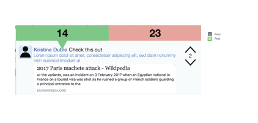
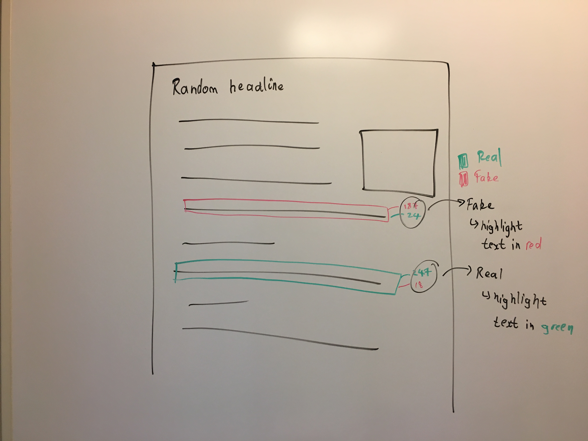
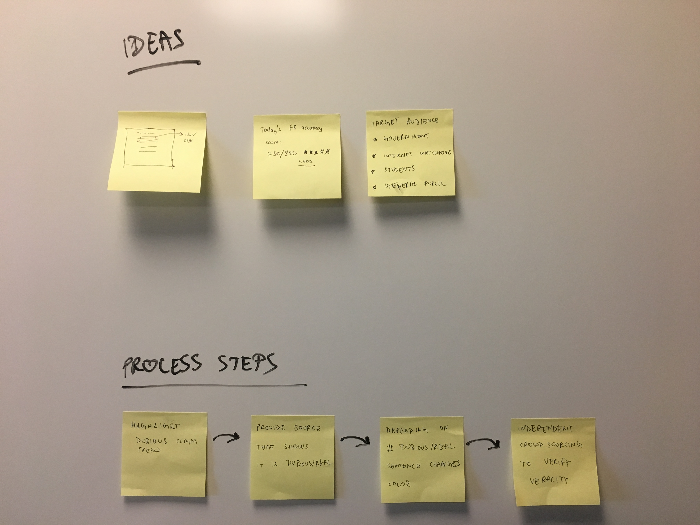
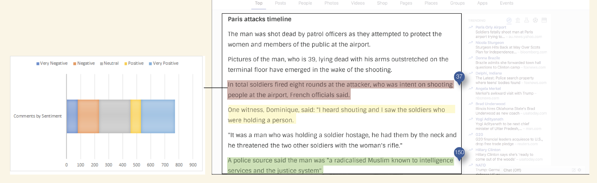
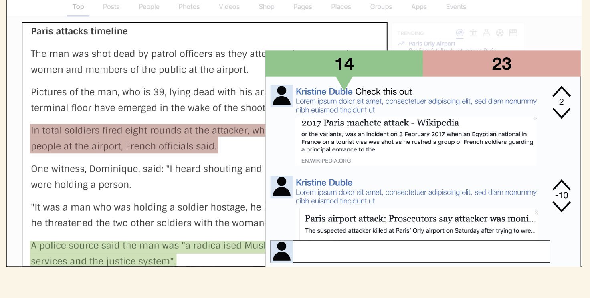

Social Media Design - designing a native Facebook plug-in to combat Fake News

Project Type: Group
Group Members: Ankita Gupta, Deepak Krishnan, Josue Reyes, Raymond Su, Sonakshi Watel
Duration: February 2017 — March 2017
My Role: UX Designer, Researcher
Competition: Munger Design Challenge 2017
Summary
We built a native Facebook plug-in to combat fake news, giving social media users the opportunity to fact-check stories, claims or any other
information shared via Facebook as they read it. Over the course of a month, we designed the product and came up with a plan of how to implement
it, winning 2nd place (and $1000) at a university-wide competition conducted by Munger Graduate Residences at the University of Michigan, Ann
Arbor in February-March 2017.
The Challenge
The objective was to create an electronic poster to come up with a system, design, method or idea to address the divisions in society that are
caused by the spread of fake news. We had one month to work on a solution and then present it to a panel of experts in academia, journalism and
research.
Background
The 2016 US Presidential Elections gave rise to a new term that we saw almost everyday on various media outlets. It’s a term that,
according to BBC, has been used about 2 million times (in my opinion a
conservative number) on Twitter — Fake News. It all started when then GOP Presidential Candidate Donald Tump tore into Liberal Media outlets,
accusing them of spreading Fake News about a variety of topics, mostly related to himself.
It was a phenomenon that most thought would abate after the elections were over. Unfortunately, that was not the case. With the rise in social
media users, fake news appeared to become a problem that was just starting out on a scale never seen before.
Along with a group of students from the School of Information at the University of Michigan, I entered a competition where students formed
multi-disciplinary teams tasked with finding potential solutions to tackle the fake news problem.
Process
We brainstormed multiple ideas but were hit by a wall because of one major problem — the scope. It was too wide. In today’s world information
is spread in so many ways and places that it’s simply too difficult to find a one-size-fits-all solution. So we decided to narrow down the
scope. We conducted interviews with peers, fellow students and other staff at the School of Information to find out from where people get
their news on a daily basis. Many people said that their primary source of news is Facebook.
Quote from an interviewee “yeah, if one of my friends shares a news article on Facebook
I read it. Sometimes I’ll cross-check that news against CNN or another news outlet but, only if the website itself seems like an illegitimate
source of news”
This led us to concentrate solely on Facebook as a source of information where fake news often gets disseminated. Now that we had our problem
statement, we moved on to brainstorming solutions to the problem.
Brainstorming solutions
We considered the problem of fake news from the points of view of various users. Each of these target audiences had different concerns and
different ways of absorbing information. We looked at four distinct sections of users — social media users, students, government
authorities, and journalists and media representatives.
Images sourced from the noun project courtesy: Wilson Joseph, Adrien Coquet, Llisole, Gregor Cesnar
Given how countries have different laws and permit varying levels of intervention in social media platforms, we faced our problem of too
wide of a scope again. We therefore assumed that a plan that places the responsibility of fact-checking fake news solely in the hands of
a government authority would not be prudent.


Initial brainstorming considered our target audience and expanded on one of our ideas which the group liked as a whole
As our brainstorming continued, we came up with two ideas that the whole team liked:
Accuracy Score: this method uses a system that assigns each published story an accuracy score, similar to that of a credit score. The
scores across various articles would be tallied and this would lead to an overall score being assigned to Facebook. These scores would
be publicly available and serve as an incentive for Facebook to ensure accuracy in the information available on the site.
Native Facebook plug-in: this method fact-checks information available on the Facebook app /website through the use of crowdsourcing.
As claims are made on a website, users are allowed to highlight certain sections of an article and categorize it as fake or real
news. As more users read such articles, they can add on to the fake/real categorization.
The Final Solution
We decided not to pursue idea # 1 because converting fake news into a score seemed implausible. Furthermore, we found it difficult to
establish a legitimate scoring system that would take into account all the parameters of measurement to decide if an article is real
or fake. Thirdly, establishing an authority that would decide if an article was fake or real seemed a complex hurdle — one that could
not be bypassed very easily and would have several legal constraints. So, we decided to go ahead with idea # 2. I have outlined our
process and design flow in the next paragraphs.
Design
Our design philosophy was to embrace simplicity. We saw no need for another app. We saw no need for a complex layer of interaction
with the user. Our goal was simple: tell a user if a claim is real or fake. So we wanted a very simple layout that allowed our users
to do just that — no frills or fancy designs.
Our solution prioritized certain key areas

Hovering over any of the numbers shows a pop-up with number of user sentiments over a range of emotions displayed in the
form of a simple graph

Simple designs with the information readily available were used
We then polished up our design ideas in the form of mockups using Sketch which you can see on our final poster below.
Final Poster
The final output from all of this was a poster which we presented at the Competition. We won 2nd place out of 6 teams in total. The prize
came with a $1000 reward for our work.